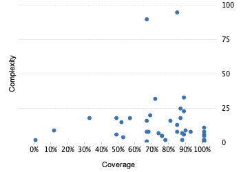

Project overview
Code coverage 30 classes, 1,126 / 1,488 elements
0.756720475.7%
Test results 49 / 49 tests 0.22 secs
1.0100%
Code metrics
308
965
215
30
22
3
5,004
2,144
394
0.41
4.49
7.17
10
1.83
Class Coverage Distribution

Class Complexity

Coverage tree map
Generating Coverage Tree Map. Please wait...

Top 20 project risks
Most complex packages
| 1. | 0.8156996481.6% |
org.devacfr.maven.skins.reflow 214 |
| 2. | 0.6299810463% |
org.devacfr.maven.skins.reflow.model 156 |
| 3. | 0.939024493.9% |
org.devacfr.maven.skins.reflow.context 24 |
Most complex classes
| 1. | 0.84581584.6% |
HtmlTool 94 |
| 2. | 0.7292307672.9% |
SkinConfigTool 85 |
| 3. | 0.7142857371.4% |
Navbar 19 |
| 4. | 0.564102656.4% |
NavSideMenu 19 |
| 5. | 0.3225806432.3% |
MenuItem 19 |